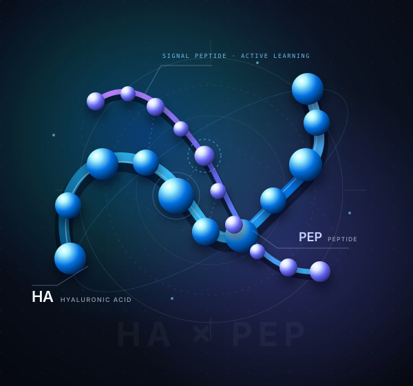

PILLAR 01 · RESEARCH ATLAS
09 MODULES
HA × PEP 透明质酸 × 信号肽研究图谱
物理先验增强的主动学习驱动精华配方设计与验证。完整收录 v5 旗舰开题汇报（23 幕交互演示 + 配套讲稿 PDF）、机制裁决台、方法学 v15.57 候选稿、证据时间线与 A+D 转化方案。
李岩松 · YANSONG LI — 科研图谱 × 智能工程 × 科学计算
将物理先验驱动的「HA × PEP 透明质酸 × 信号肽」主动学习课题图谱，与 15 项涵盖 AI 智能体、量化风控架构、实验室算力集群及边缘生物传感的开源工程，融汇于同一座 Apple 3D 空间工作台。

物理先验增强的主动学习驱动精华配方设计与验证。完整收录 v5 旗舰开题汇报（23 幕交互演示 + 配套讲稿 PDF）、机制裁决台、方法学 v15.57 候选稿、证据时间线与 A+D 转化方案。
以可验证证据与硬性风控门禁为核心：Quant Agent v2.1 本地优先量化研究框架、华泰 A 股研究智能体、ZA Bank 财务分析助手及本地微信自动化智能体。
连接物理实验与计算底座：ChemCompute 实验室 GROMACS/Gaussian 算力调度台、BioSmartSense $34.80 便携电化学水质仪、ArchiveLens SHA-256 备份核验工具。
01 HA × PEP RESEARCH ATLAS
从机制假设到配方设计，从开题汇报到阶段证据。
先读简介，再进入完整的交互式演示页面。
试试“机制”“方法”或“v5”。
02 SELECTED ENGINEERING & SYSTEMS
4 篇完整工程架构深度案例 + 11 项开源工具与实验系统。
所有项目均公开源码、明确设计边界并支持本地复现。
本地优先的 AI 量化研究框架：集成多数据源（yfinance / AKShare）、Walk-Forward 自进化验证、半凯利仓位管理与情绪过滤，将实盘交易严格锁定在多重人工确认门禁之后。
可逐文件核验的本地 ZIP 备份恢复校验工作台。基于可信 SHA-256 清单逐项比对恢复副本，穿透重压缩字节差异，精确识别篡改、缺失与异常夹带文件。
物料成本低于 $35 的便携式电化学阻抗谱（EIS）生物传感与边缘 AI 水质检测平台。结合 Randles 等效电路物理拟合与机器学习分类，实现现场重金属与水质安全即时预警。
将实验室多台分散 PC 整合为协同计算集群的 Windows 算力调度主控台。单一安装包覆盖主控端、计算节点与 GROMACS/WSL 适配器，支持邀请码准入、配额管理与 SHA-256 校验升级。
03 A WAY THROUGH THE ATLAS
按问题、设计、证据、应用的顺序，
把独立的交互页面连成一条严密的科学叙事。
04 ABOUT & ENGINEERING PHILOSOPHY
把软件与硬件当作诚实的科学仪器：
能力清晰可测，边界同样坦诚透明。
围绕透明质酸（HA）与信号肽（PEP）复合体系，将分子动力学、物理先验约束与主动学习相结合，使配方迭代可解释、可追溯。
让大模型承担研究提案、信号归纳与桌面自动化，但将真实资金交易与不可逆操作严格隔离在确定性的风险门禁与审计日志之后。
从 GROMACS / Gaussian 分布式桌面算力池，到基于 AD5940 的 $35 四层 HDI 电化学阻抗谱仪，打通湿实验数据采集与干实验计算闭环。
优先使用零云端依赖的本地内存架构与密码学校验（SHA-256 清单、安全边界拦截），不仅报告结果，也清晰声明未覆盖的边界。
05 CONTEXT & PROVENANCE
本站同时汇集了「HA × PEP 透明质酸 × 信号肽」课题的 9 份交互式研究档案与 15 项开源软件/硬件工程。每一个科研页面与代码仓库均保留原始版本标注、假设条件与适用范围说明。
方法学页保留来源页的 v15.57 候选稿标注；证据时间线标注截至 2026 年 10 月 14 日，属于阶段叙事页面，不是实验结果发布。
2026 年 10 月 15 日的 HA16 状态说明记录了科学状态 HOLD、production_release=false，轨迹为 PARTIAL。本站按来源标注方案、候选稿与阶段记录，不将其表述为已验证产品功效；开源量化与硬件项目同样仅供研究与工程验证。